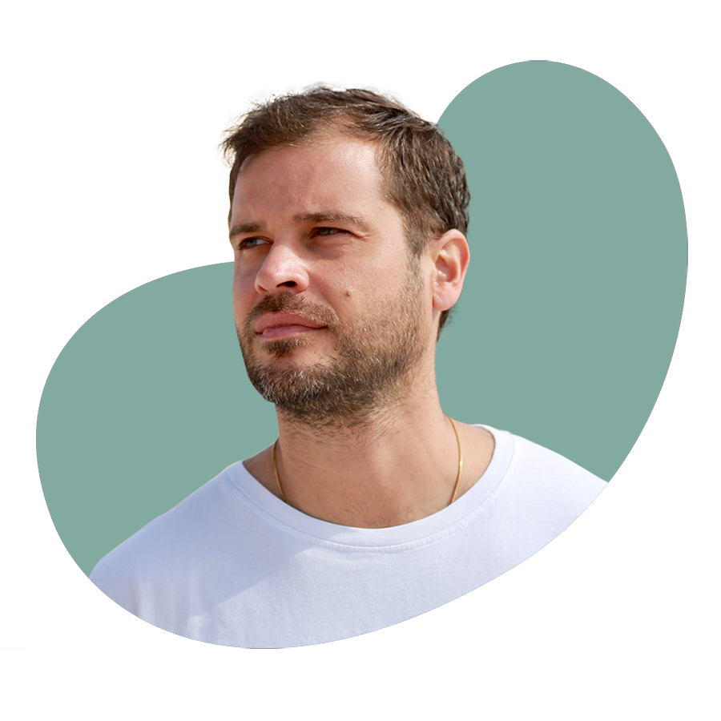

About me.
Hace 8 años llegué a Madrid para desarrollar mi carrera profesional después de estudiar Publicidad y RRPP en Granada. Hice el master de creatividad en Zink Project que me sirvió para realizar mi primer portfolio e iniciarme como becario en prácticas en Euro RSCG. Después estuve en una agencia más pequeña (Diluvia). De ahí di un salto a Publicis Group donde estuve un año y por último en El tio Matt, donde llevo 6 años como director de arte. Hoy tengo la experiencia de haber trabajado para grandes, medianas y pequeñas cuentas como Peugeot, Pernod Ricard, Carrefour, Gocco, Avis, etc., de las que he aprendido todo lo que he podido. Mañana quiero seguir aprendiendo y trabajando con nuevas personas y nuevos equipos y proyectos.
PRESENTACIÓN
